| 日付 | 2024年6月14日（金） - 2024年6月15日（土） | ||||
|---|---|---|---|---|---|
| 山域 | 越後 | ||||
| メンバー | 単独 | ||||
| 山行形態 | 1泊2日避難小屋泊 | ||||
| アクセス | 車 | ||||
| ルート (Map) |
|
GWに山に行ってから1ヶ月半振りの登山。
最初は赤岳に登ろうと考えていたが、西の方は天気が崩れそうだったので、
新潟の丹後山～中ノ岳に登ることにする。
中ノ岳に登るのは16年振りだ。
1日目
登山口近くの三国川ダムにトイレがあったので立ち寄る。
ついでにダム見学。
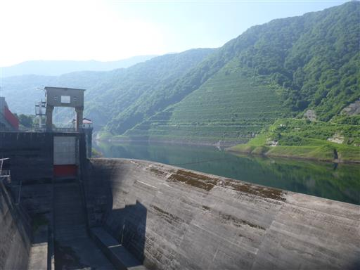
下界を見下ろす。車でここまで標高を稼いだ。
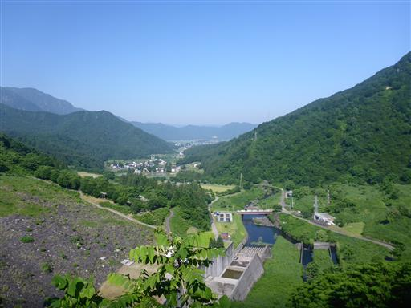
橋を渡った先の駐車場に車を停める。標高440m。
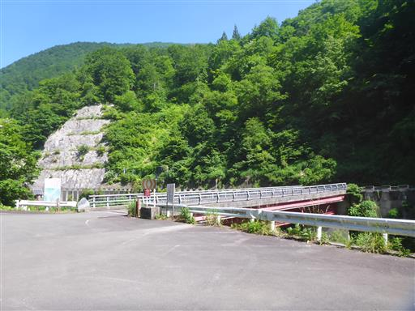
足元の三国川は水が非常にきれいだ。ここから飛び込みたくなってくる。
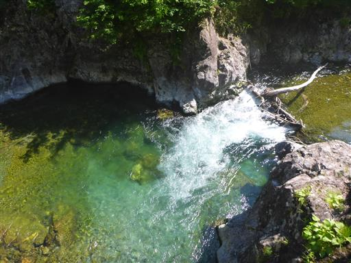
ここから先は車が入れないようバリケードがある。
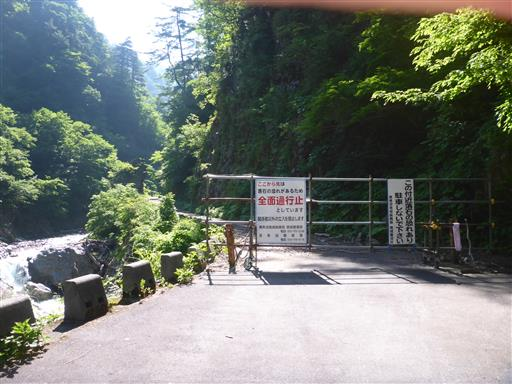
転落防止のブロックの上に、なぜか1つずつ石が置かれている。
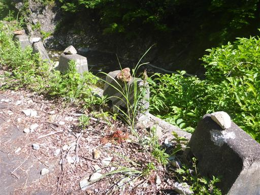
三国川沿いの林道を歩いていく。
山と高原地図には7月上旬まで残雪が道をふさぐと書かれているが、
雪の痕跡など全く見当たらない。
これも地球温暖化の影響なのだろうか？
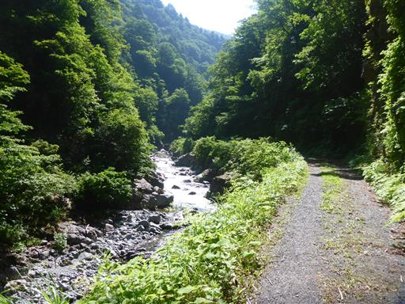
岩の間から水が染み出して小さな滝を作っている。

道路にある大きな水たまりに大量のオタマジャクシが住んでいる。
この水は干上がらないのだろうか？
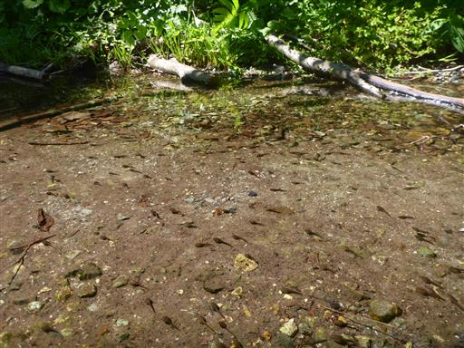
40分ほどで登山口に到着する。

ここから登山道に入っていく。
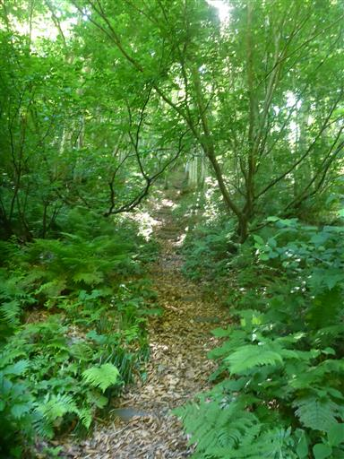
鉄砲平に到着。ここが一合目だ。
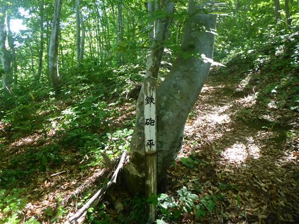
急斜面の登山道が続く。
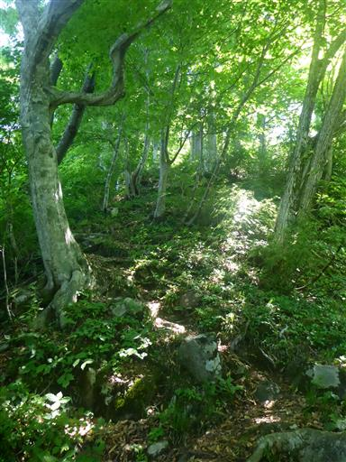
立派なブナの木。すぐ横で枯れている木もかなりの大木だ。
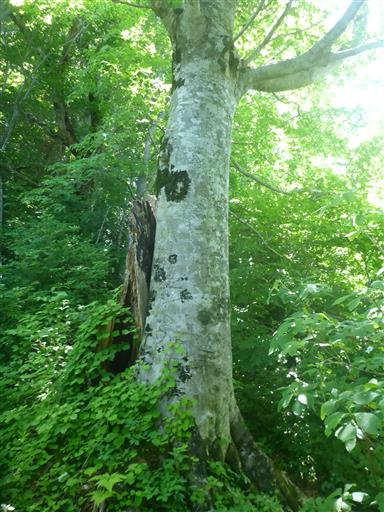
まだ二合目なのに結構疲れている。普段は気づけば六合目くらいなのに。
荷物が重いと登るのが大変だ。
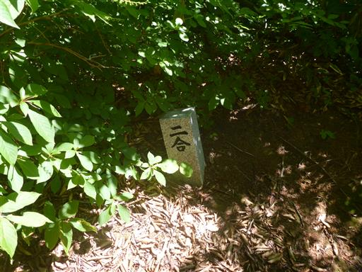
左手に本山行の目的地の中ノ岳が聳えている。
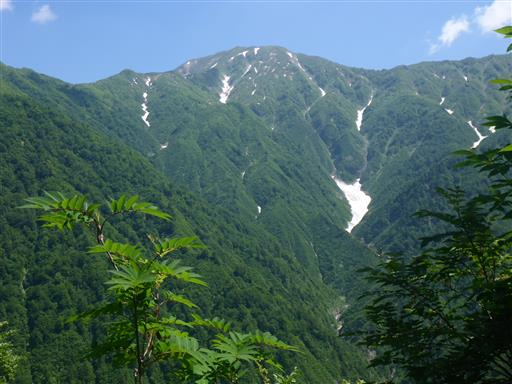
立派な松の木。
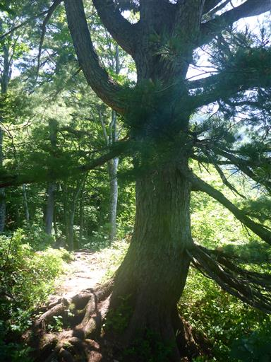
ギンリョウソウ。
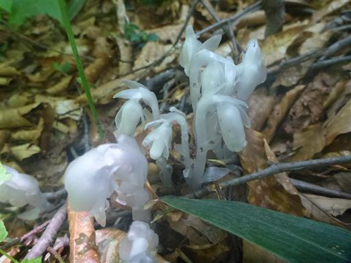
右手に見えるのは立派な山容の下津川山。登山道が無い山だ。
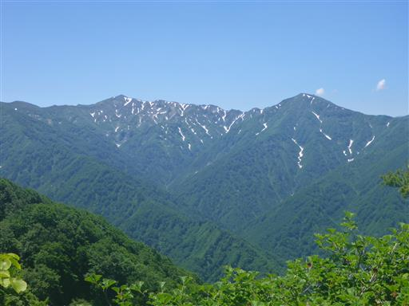
ウラジロヨウラク。
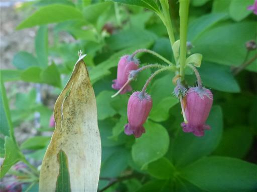
林床にはマイヅルソウがたくさん見られる。
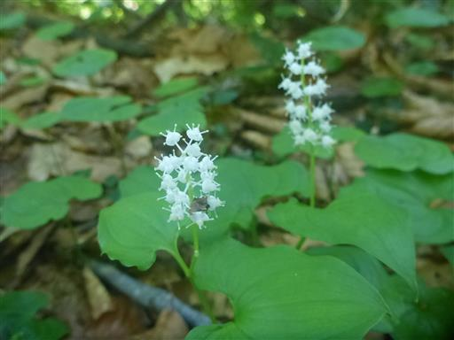
この辺りはブナの木が多い。
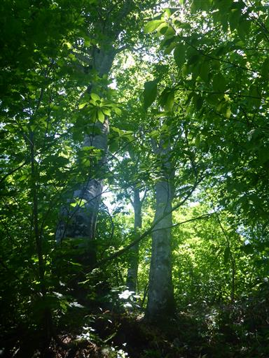
ようやく五合目に到着。疲れたのでここで昼食休憩をとることにする。
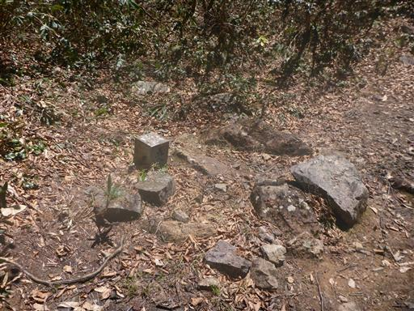
緑のトンネルが目に眩しい。
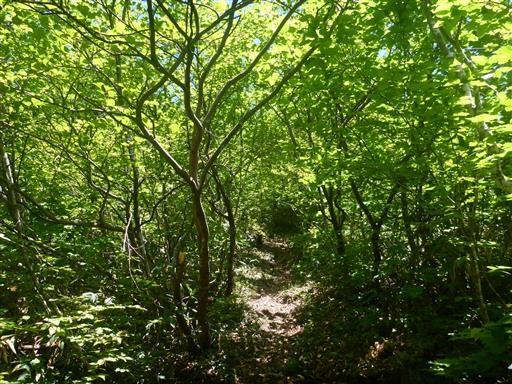
イワカガミ。マイヅルソウと並んであちらこちらに咲いている。
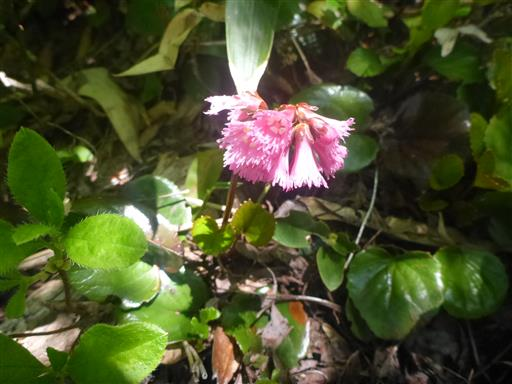
丹後山の稜線が見えてきた。
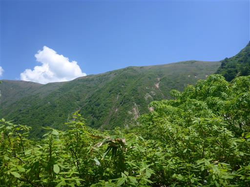
その左には鋭角に聳える中ノ岳。
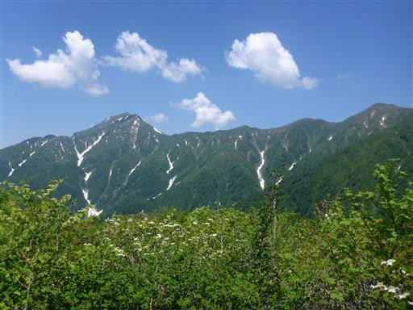
タムシバとオオカメノキ。どちらも白い花をつけている。
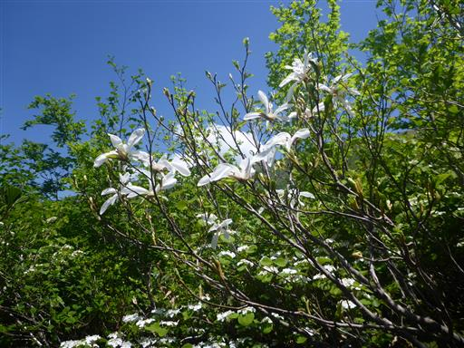
六合目に到着。五合目まで大変だったのに、六合目はずいぶんと近い。
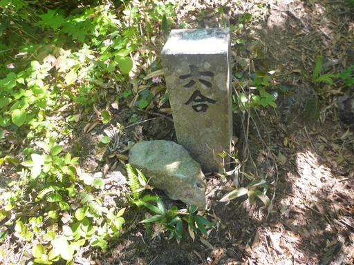
遠くに下界が見える。だいぶ高いところまで上がってきた。
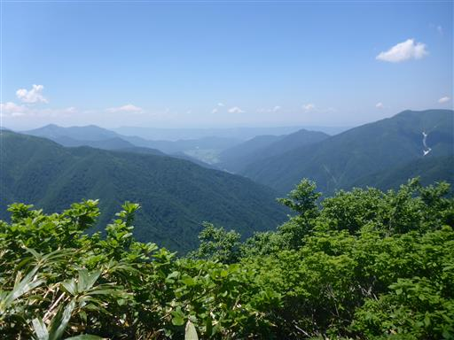
森林限界を超える。今日は下界の気温が30度超えで、直射日光が暑い。
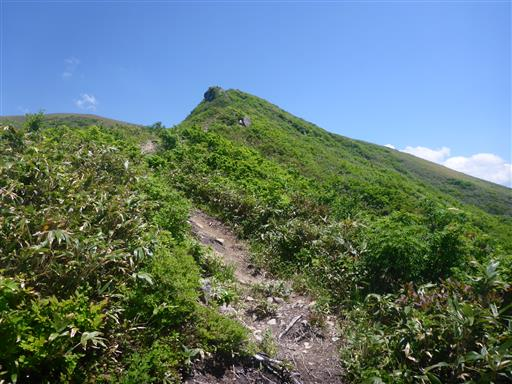
ちょっとした鎖場が出てくるが、簡単に越えられる。
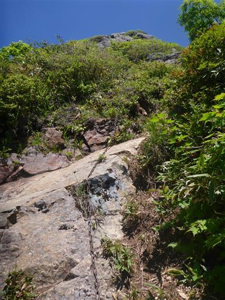
標高を上げるとツマトリソウが見られるようになる。可憐な花だ。
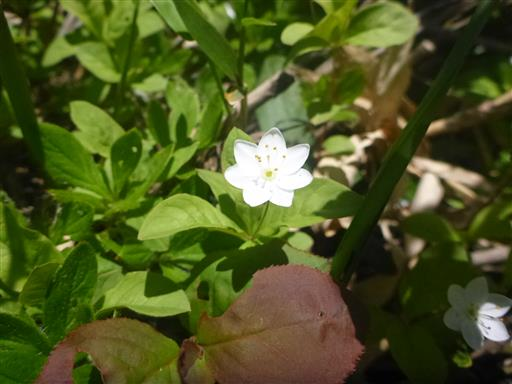
ミツバツチグリだろうか？数は少ないが黄色い花も咲いている。
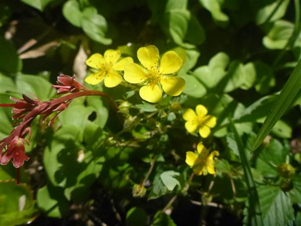
オノエラン。
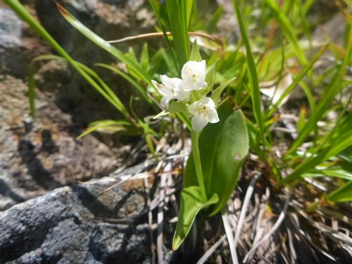
八合目に到着。七合目は見当たらなかった。五合目から先はずいぶんと間隔が短い。
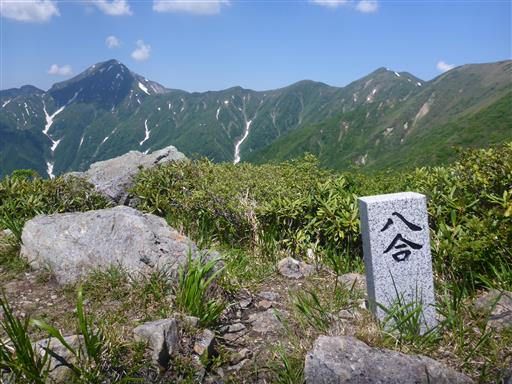
すぐ目の前には丹後山が横たわる。つかみどころのない、のっぺりとした山だ。
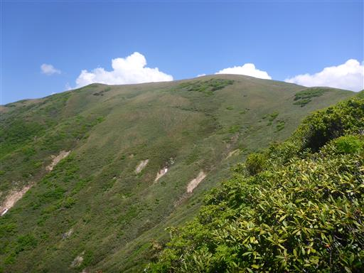
あちらこちらでタテヤマリンドウが見られるようになる。
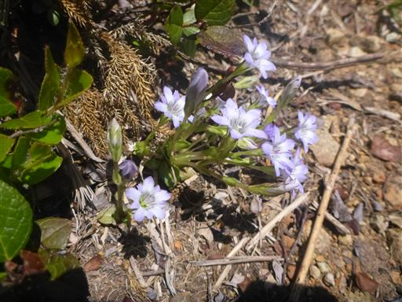
九合目で主稜線に到達する。
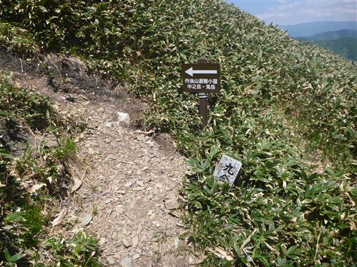
ここから南に向かう尾根は、遠く巻機山に続いているが、登山道は無い。
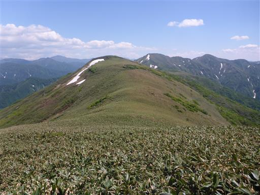
薄っすらと踏み跡が見えるが、ほとんど藪漕ぎだ。
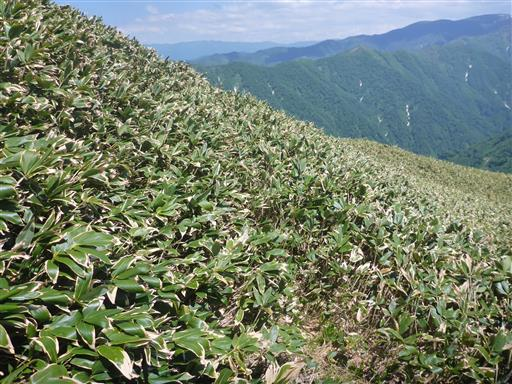
ここから丹後山目指して笹原の中を歩いていく。
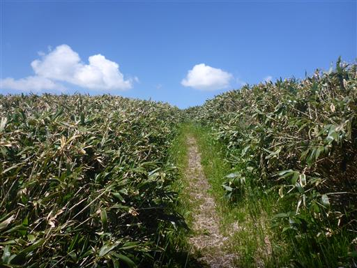
中ノ岳と、その左に八海山が見える。
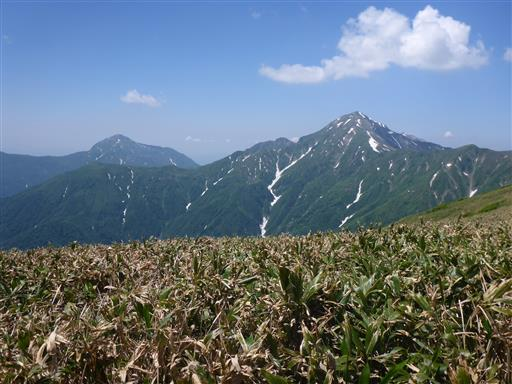
笹原の中に丹後山避難小屋が見えてきた。
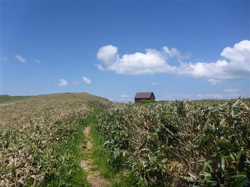
左：中ノ岳、右：巻機山の標識。まるで巻機山まで登山道が通じているかのような書き方だ。
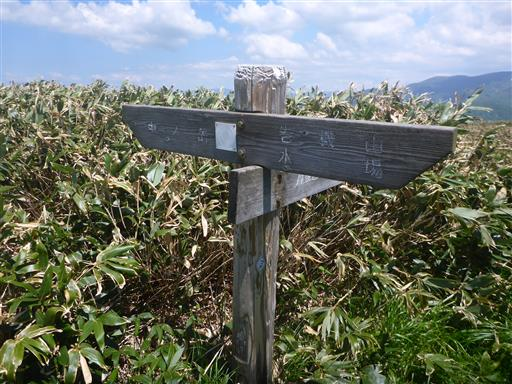
丹後山避難小屋に到着。久々の重い荷物の登山でかなり疲れてしまった。
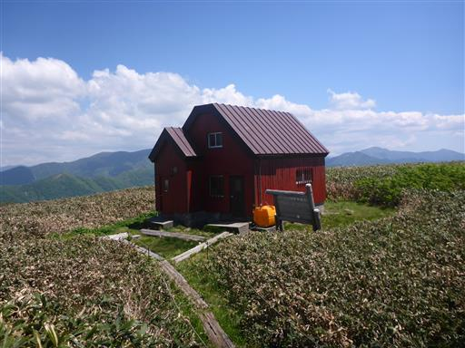
小屋の中はきれいに清掃されている。
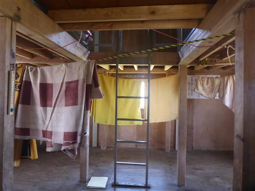
小屋に荷物を置いたら丹後山まで行ってみる。
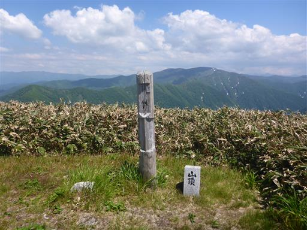
立派な石柱は上部に「丹後山」と彫られている。
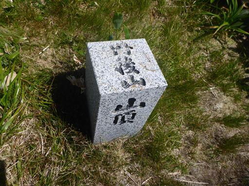
山頂からは360度の展望が広がるが、だだっ広いため周囲の山をあまり望めない。
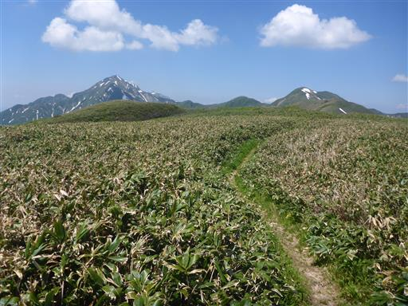
時間は有り余っているので、周囲の景色を眺めるためウロウロと歩き回る。
下津川山と、右奥に見えるのは巻機山だ。
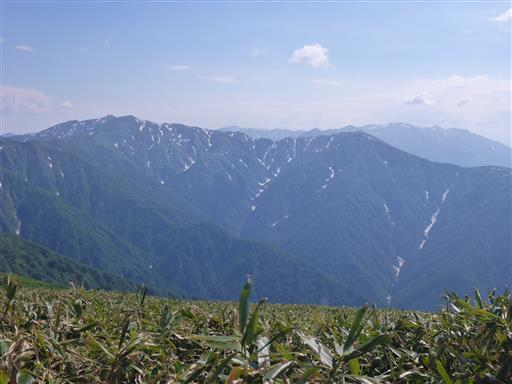
明日歩く予定の中ノ岳に続く稜線。
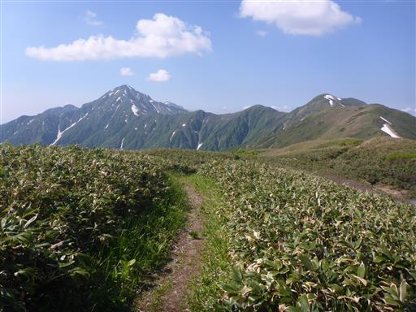
中ノ岳は鋭角に聳える非常に立派な山だ。この辺りでは標高も一番高い。
ダサいのは名前だけで、もっと評価されてよい山だと思う。
この辺りにも花は多い。ミツバオウレンがたくさん咲いている。

コミヤマカタバミ。
アズマイチゲ。もう花は終わりかけだ。
小屋に着いて5時間。暇を持て余したが、だいぶ日が傾いてきた。
笹原と小屋が夕日に照らされている。
夕日を浴びる平ヶ岳。いつか行ってみたい山だ。
ガサゴソと音がしたので見てみると、一頭のシカが笹原を駆けている。
19時。ようやく日の入りの時間。
山の向こうに沈むかと思ったら、それより少し上の方で太陽が沈んでいく。
ここからだと全く見えないが、あの位置に水平線があるようだ。
完全に日が沈んだ。丹後山避難小屋で宿泊するのは自分一人。
明日に備えて早めに寝る。